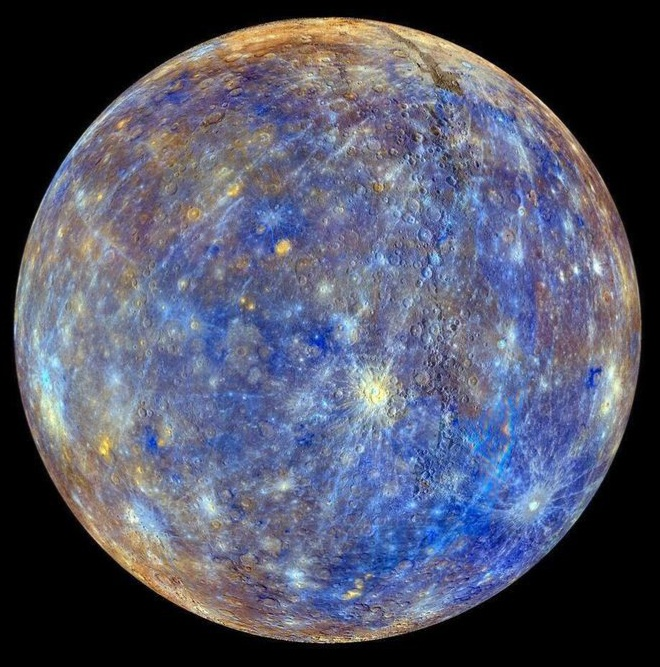
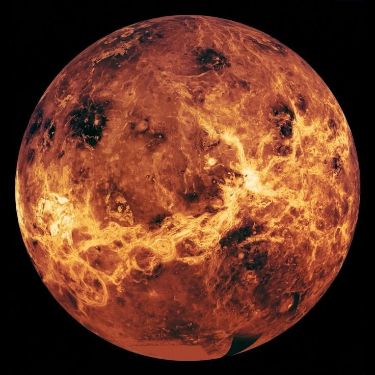
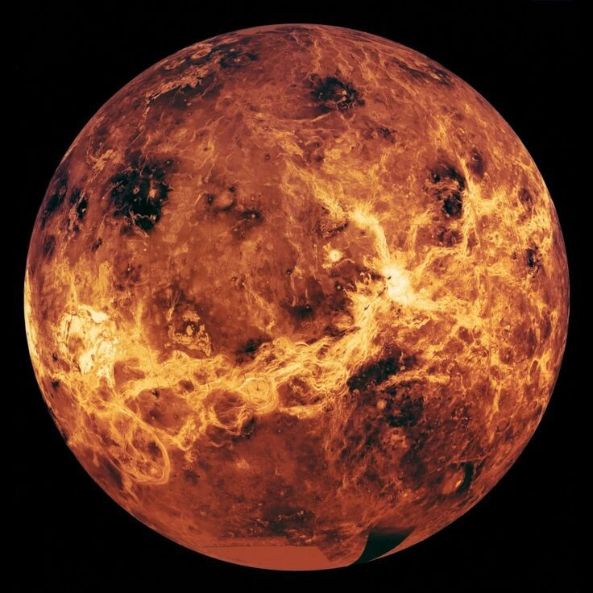
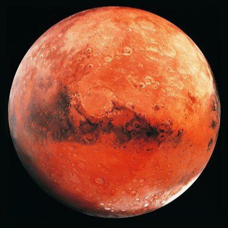
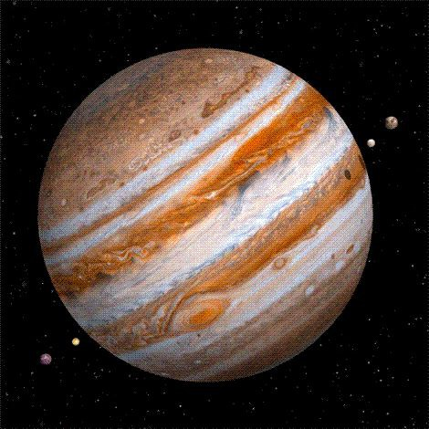
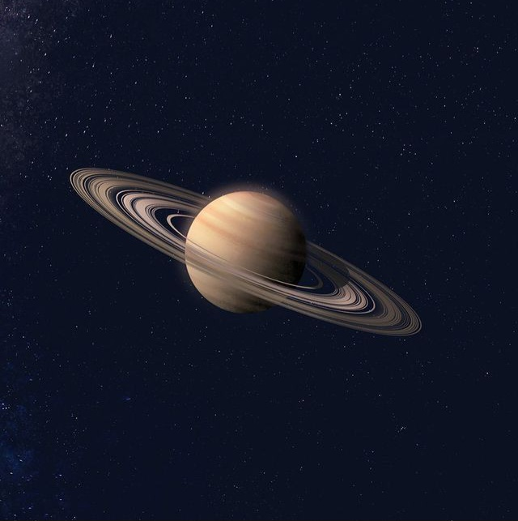
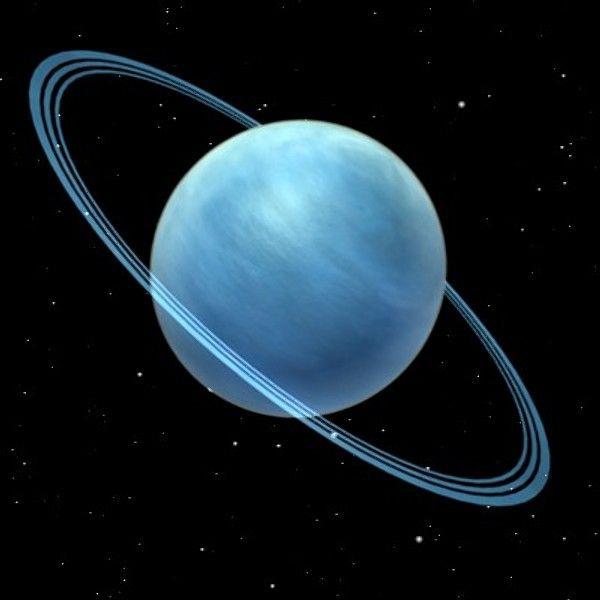
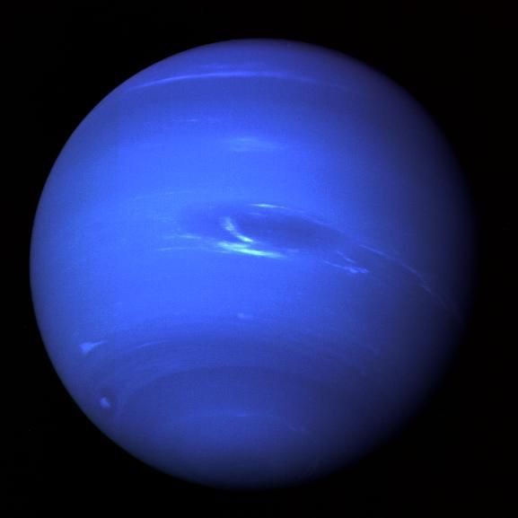

-

Merkurius
X close ‹

Merkurius
Merkurius merupakan planet terkecil di Tata Surya sekaligus yang terdekat dari Matahari. Periode revolusi planet ini merupakan yang terpendek dari semua planet di Tata Surya, yakni 87,79 hari Merkurius merupakan planet inferior yang letak orbitnya berada di sebelah dalam orbit Bumi, dan ketika diamati dari Bumi, jarak sudutnya dari Matahari tidak pernah melebihi 28°. Karena jarak yang dekat dengan Matahari, planet ini hanya dapat dilihat di dekat ufuk barat setelah matahari terbenam atau ufuk timur sebelum matahari terbit, atau biasanya ketika aram.
› -
 Venus
X close ‹ 
Venus
X close ‹ Venus
Venus adalah planet kedua dari Matahari . Ini adalah planet berbatu dengan atmosfer terpadat di antara semua benda berbatu di Tata Surya , dan satu-satunya planet dengan massa dan ukuran yang mendekati massa dan ukuran orbit tetangganya, Bumi . Mengorbit di bagian inferior (di dalam orbit Bumi), ia muncul di langit Bumi yang selalu dekat dengan Matahari, sebagai "bintang pagi" atau "bintang malam"
› -
 Bumi
Bumi
-

Mars
X close ‹
Mars
Mars adalah planet keempat dan planet terestrial terjauh dari Matahari. Warna kemerahan pada permukaannya disebabkan oleh debu besi(III) oksida berbutir halus di dalam tanah, sehingga mendapat julukan "Planet Merah". Jari-jari Mars merupakan yang terkecil kedua di antara planet-planet di Tata Surya yaitu 3.389,5 km
› -  Jupiter
-  Saturnus
-

Uranus
X close ‹
Uranus
Uranus adalah planet ketujuh dari Matahari. Uranus merupakan planet yang memiliki jari-jari terbesar ketiga sekaligus massa terbesar keempat di Tata Surya. Uranus juga merupakan satu-satunya planet yang namanya berasal dari tokoh dalam mitologi Yunani, dari versi Latinisasi nama dewa langit Yunani Ouranos
› -

Neptunus
X close ‹
Neptunus
Neptunus merupakan planet terjauh jika ditinjau dari Matahari. Planet ini diberi nama dari dewa lautan Romawi. Neptunus merupakan planet terbesar keempat berdasarkan diameter dan terbesar ketiga berdasarkan massa. Massa Neptunus tercatat 17 kali lebih besar dari Bumi, dan sedikit lebih kecil dari Uranus
›